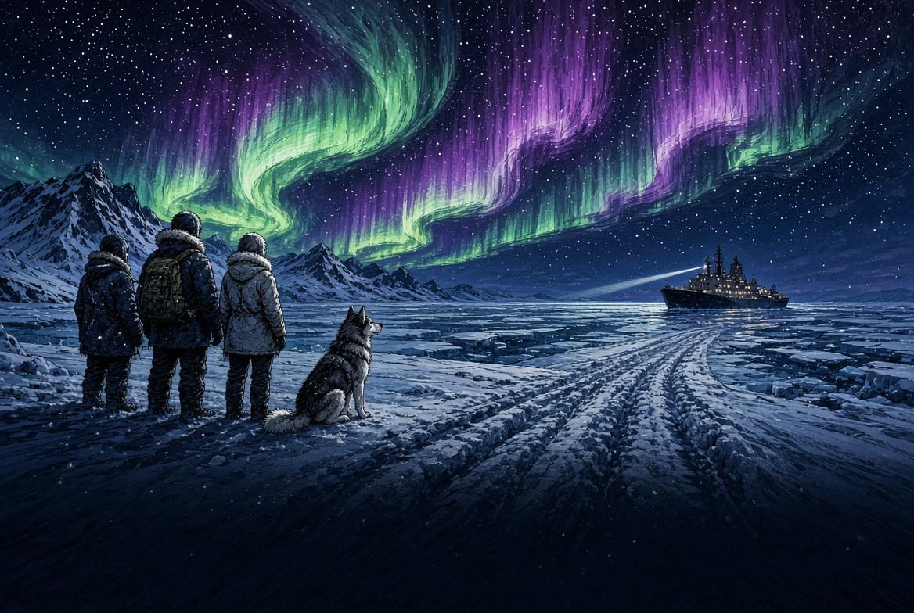
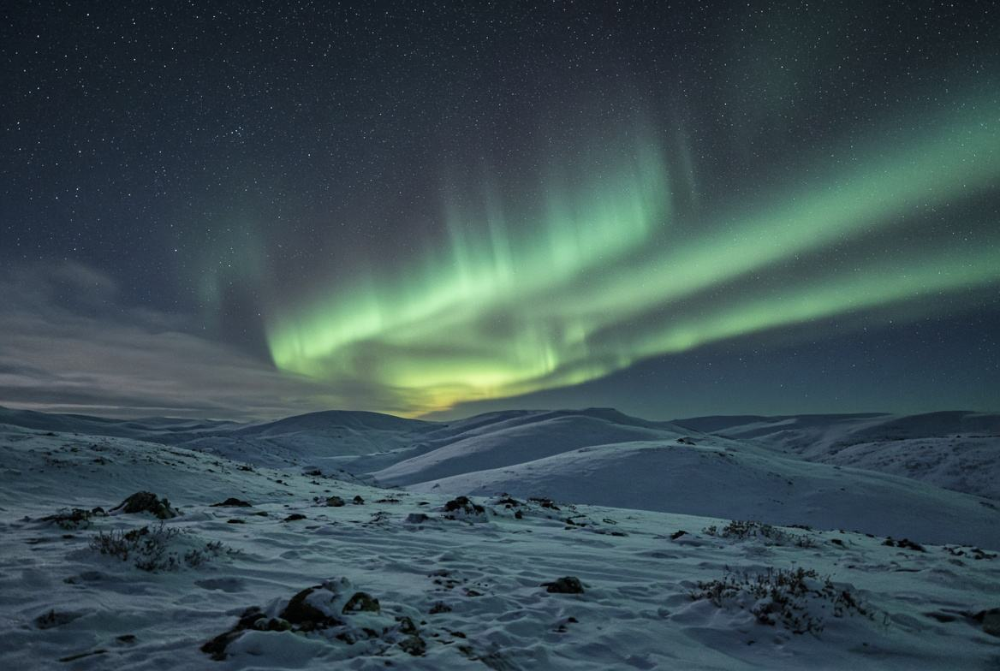
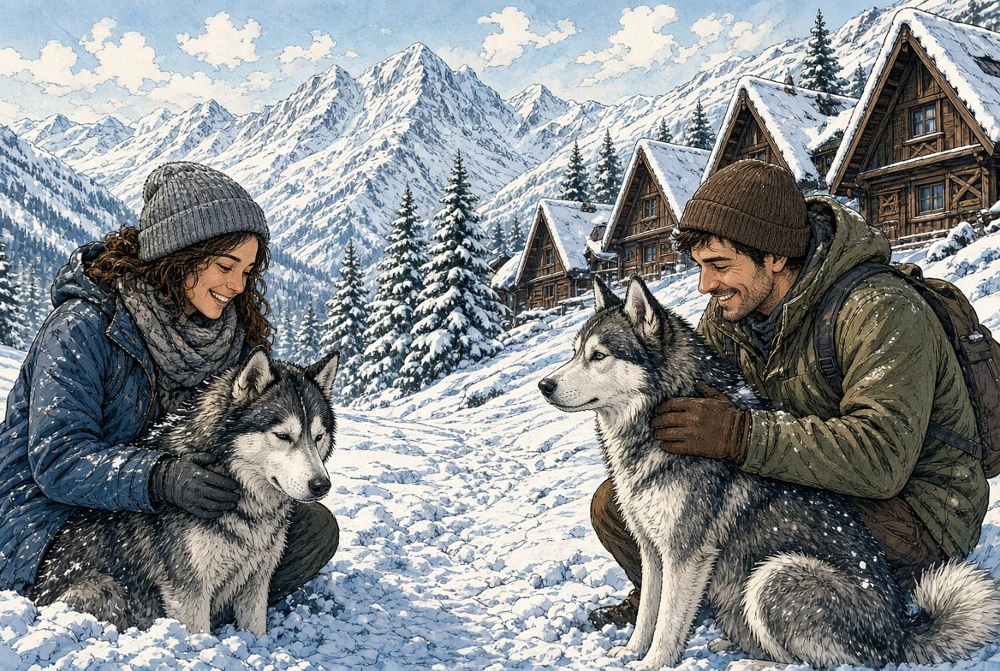

День 1Первая охота
Встреча у адреса. Вечер за сиянием: плед, термос, без колонны автобусов. Если облака — ночь не сгорает, она переезжает на следующий вечер.

КолаТур · Новый год · 4 человека
Праздники · зимняя Териберка · хаски · ледокол «Ленин»
4 дня / 3 ночи · жильё ваше · море уже закрыто
Зимой катера нет. Зато ночь длинная, снег есть, и сияние случается чаще, чем в октябре. Это другой Север — не урезанная осень.
Программа
Отдельная машина на четверых. Забор от вашего адреса. Праздничный ужин в программу не прячем — его нет, подскажем город отдельно.
Встреча у адреса. Вечер за сиянием: плед, термос, без колонны автобусов. Если облака — ночь не сгорает, она переезжает на следующий вечер.
Сопки, пустая тундра, посёлок на склоне. Берег, где вода тёмная, а у камней лёд. «Яйца дракона», кладбище кораблей, заброшенная школа. Океан зимой — край дороги и ветер, не катер. Вечером вторая охота.
Упряжка: короткий заезд, фото, тепло после. Не конвейер на десять минут. Если хотите тише — саамская деревня и олени вместо собак, скажите до заезда. Цена та же.
«Ленин» днём: первый атомный, палуба и рубка. Если две ночи молчали — третья охота вечером, без доплаты. Утро двигаем под ваш рейс.

Глава · ночь
На праздниках вечер не оставляем в городе. Уезжаем туда, где нет фонарей. Две охоты в программе и третья, если небо молчало. Сияние не продаём. Продаём тёмное место, тёплую машину и человека, который знает, куда ехать, когда прогноз врёт.

Глава · хаски
Катер на Новый год не обещаем и не прячем это в сноске. Живой день — упряжка. Коротко, без гонок, чай после. Кому тише, чем лай на всю долину: саамы и олени, та же сумма.
Новогодний прайс
218 000 ₽
54 500 ₽ с человека · на четверых
Две охоты и запасная третья, зимняя Териберка, хаски или саамы, ледокол «Ленин». Проживание не входит.
178 000 ₽
44 500 ₽ с человека · на четверых
Сияние, зимняя Териберка и хаски или саамы. Та же честность: небо не гарантируем, китов зимой нет, выезды — да.
Окна: 30.12–02.01 · 02.01–05.01 · 05.01–08.01, или ваши даты внутри каникул. На праздники гид и машина заканчиваются раньше программы — сумму фиксируем в переписке до оплаты. Яна · WhatsApp +7 (995) 877-19-79

Новогодние праздники